Ravel user audit
Verdict
The app is calm, fast and honest about money, and the counter never lost a row. Two defects should be fixed before release: a trial is offered for a hat the app cannot write at the chosen gauge, and a yarn saved without a name is thrown away. After that, the paid pattern needs a way to read ahead and a round number on every step. The rest is a list of holes a knitter finds in week one.
As a gift knitter (the raccoon hat from TikTok): I get from the store to a pattern at my size in under a minute, with the price shown before anything else. Then I cast on and the app shows me one instruction at a time with no way to read the whole pattern, no round number on most rounds, and a finish screen that leads nowhere.
As a knitter with my own PDF (searched "row counter"): the counter is lovely. The PDF reader forgets my zoom every time, its row marker does not follow the count, and if I lose my phone I lose everything, because there is no backup.
Ranked fixes
Ranked by harm to a real user, then by how small the fix is. "Before release" items are all small.
| # | What | When | Size |
|---|---|---|---|
| 1 | A trial is offered for a chart that does not fit the chosen gauge; the knitter learns it after subscribing (found by the other audit today, confirmed in the code) | Before release | Small |
| 2 | Make the public claims match: "tested" on the site, 32 versus 45 designs, which designs are free | Before release | Tiny |
| 3 | Let a knitter read the whole pattern and see what comes next | Before release | Small to medium |
| 4 | Show the round or row number on every step | Before release | Small |
| 5 | Raccoon Beanie: needle color at cast on, ear placement, eyes worked the usual way | Before release | Small (pattern data) |
| 6 | White flash at launch: give the launch screen the app's cream background | Before release | Tiny |
| 7 | Stash: a yarn saved without a name is discarded with everything typed; swipe deletes without asking; a needle is added even if the editor is dismissed | Before release | Tiny |
| 8 | Explain "Inc across" and other house terms where they appear | First update | Small |
| 9 | Backup or export, so a lost phone does not lose every count | First update | Medium |
| 10 | PDF reader: keep the zoom, move the marker with the count, accept "Open in Ravel" | First update | Medium |
| 11 | A finish worth reaching: photo, share, knit again, next pattern | First update | Small |
| 12 | Search words knitters use: christmas, gift, toque, jumper; hide wrong matches | First update | Small |
| 13 | Instruction text smears for 0.2 s on every tap; onboarding button blinks | First update | Small |
| 14 | Count from the Lock Screen (Live Activity or widget) | First update | Medium |
| 15 | Counters: how many repeats are done, more than one extra counter, a reminder at a row | Later | Medium |
| 16 | Real test knits with photos, a schematic and an ease choice for sweaters, Ravelry import, Apple Watch, timer, project photos, a units switch | Later | Large |
Before release: purchase and claims
Before releaseA trial is offered for a pattern the app cannot write
Found by the other audit and confirmed in the code. On a colorwork design, some size and gauge pairs leave no room for the chart. A subscriber sees a disabled button, "Chart Does Not Fit This Gauge". A person who has not paid sees "Try Free for 7 Days" at the same settings, because the fit check is skipped for locked designs (LibraryView.swift line 392). They agree to a renewing trial and land on a dead button.
DecidedSample photos
The library's sample photos are generated images. Jack's decision on 2026-11-20: they stay. For reference, the rules elsewhere: Etsy announced on 2026-10-22 that craft pattern listings need a real photo of a finished result (source), and Ribblr and TKGA take the same line. Photos of real knits from test knitters remain the cheapest proof the library can add.
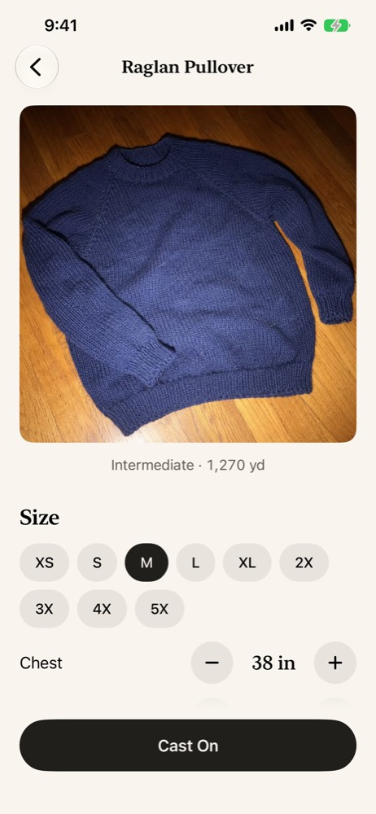
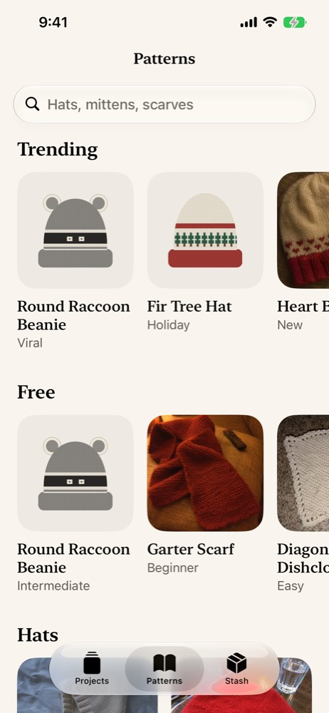
Before releasePublic claims that do not match each other
- "Tested". The site says "Every design is tested at every size and yarn weight" (
docs/index.htmlline 723). To a knitter "tested" means test-knitted by people. The store description already uses the right word, "checked". Use "checked by software" on the site too. - Design count. The site's structured data says "a library of 32 designs" (line 34). The page body and the store say 45.
- Free designs. The promotional text says "A raccoon hat, two more patterns" are free. The description names only the Garter Scarf and the Diagonal Dishcloth. The app shows three free designs.
- Nobody has knitted these. No test knit is claimed anywhere, which is honest. It is also the gap. A pattern with zero finished projects reads as untested. Five to ten test knitters with Ravelry project pages are the cheapest proof there is, and they are also the cheapest launch channel.
The paid pattern, knitted start to finish
This is what the subscription buys, so I knitted the free Round Raccoon Beanie (71 taps) and the Raglan Pullover (386 taps) to the last row and read every instruction.
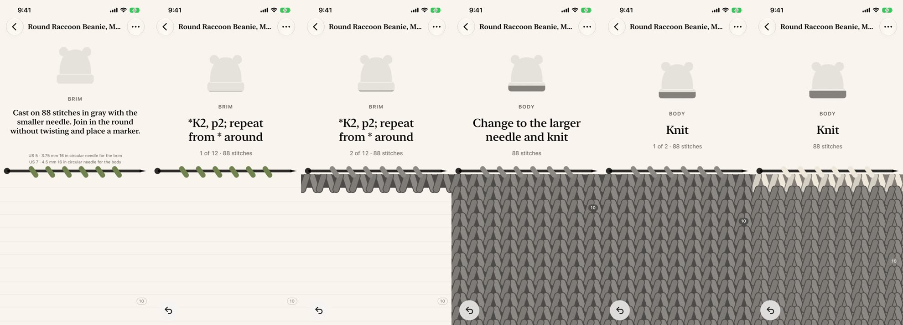
Before releaseThere is no way to read the whole pattern
Before casting on, the design page shows the opening rows and then one grey line of section names ("Crown, First Ear, Second Ear, Finishing"). After casting on, the screen shows exactly one instruction. I cannot see the next round, read ahead to check I understand the crown before I get there, or look back at what I did. I cannot print or export it either.
Knitters read a pattern through before they buy yarn. It is also how they recover from a mistake: you need the last few rows to find where you went wrong. Every paper pattern and every PDF gives this for free.
Before releaseMost steps do not say which round you are on
The design page preview numbers every round ("Round 4: With cream, knit"). The guided screen drops the number: a single round shows "Knit" and "88 stitches". A run shows "1 of 12", which counts within the run, not the round of the section. When I put the work down and pick it up, "Body, Knit" does not tell me whether I am on round 3 or round 5. The fabric shows a small 10 every ten rows, but that is the count for the whole project, not the section.
Before releaseThe Round Raccoon Beanie, the design that leads both shelves
This is the free design the marketing points at, so it is the first pattern most people will knit. Four things:
- The needle shows green loops while the text says "Cast on 88 stitches in gray". At cast on and round 1 the loops are the default green. A beginner checks the picture against the words.
- The eyes are stranded. As written, the two cream eye squares are knitted in, with cream carried behind about 60 black stitches for 3 rounds. That makes long floats inside a hat or constant catching. Small isolated motifs like these are normally added afterwards in duplicate stitch, which is also easier for the "Intermediate" knitter this design is rated for.
- Nothing says where the ears go relative to the face. The mask is centered about a quarter of the way round from the start of the round, so the color jog sits at the side of the head. The finishing step does not tell the knitter to line the ears up with the face. Get that wrong and the hat is not a raccoon.
- The design page has no description. No sentence on what techniques it needs (stranded colorwork, picking up stitches for ears) and no sample image beyond the drawing.
The pattern lives in docs/designs.json, so it can be corrected without an app update. Records there are published only with Jack's yes.
First updateHouse terms are not explained where they appear
The raglan yoke's key row reads "*Inc across; repeat from * 3 more times". "Inc across" is Ravel's own shorthand (knit 1, make 1 left, knit to 1 before the marker, make 1 right, knit 1, slip the marker). It is defined in the glossary, which sits under the menu, then Materials, then a long scroll. Tapping the screen for help knits a row. "Double stitch" in the short rows has the same problem.
First updateSmaller things on the guided screen
- The title cuts off the size: "Round Raccoon Beanie, M...". The size is the one fact I want confirmed.
- The needle sizes at cast on are tiny (footnote type that shrinks further). This is the one moment the knitter needs them.
- The garment picture and the section label move up and down by 7 to 15 points whenever the instruction changes length. Pin them.
- Sweaters take 3 measurements and a fixed 3 inches of ease. There is no upper arm measurement and no choice of fit. A garment knitter's first question is "is 38 my chest or the finished chest?" The page should answer it in one line and, later, offer close, classic or relaxed fit.
What held up. The Raglan Pullover's numbers are consistent end to end: 184 body stitches is 41 inches at the stated gauge, sleeves go from 64 to 40 stitches at the stated rate, lengths match the measurements, and the short rows are written correctly. Shaping rows say the count "after this round". Undo works at every step.
First updateFinishing is a dead end
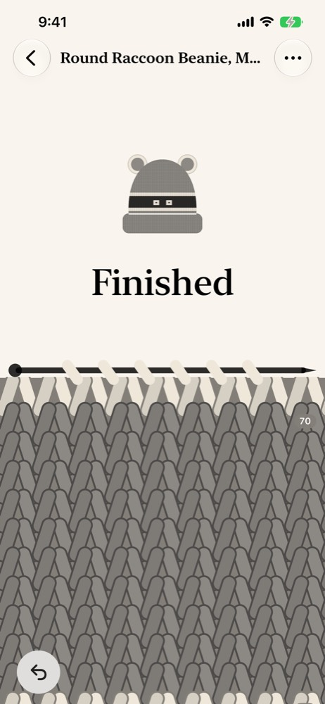
The happiest moment in the app has nothing to do. No photo of the real hat, no share, no "knit it again in another size", no next pattern. The rating ask fires 3 seconds later, which is well timed, but then the screen just sits there.
Going back to the design in the same visit, the button still says "Open Project" for the finished project instead of "Cast On" (the check for an existing project does not look at whether it is finished).
First run and finding a pattern
Before releaseA white screen flashes before the cream app
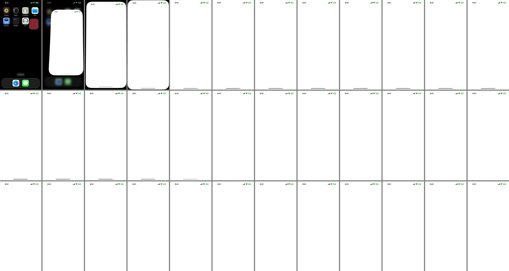
Info.plist has an empty UILaunchScreen, so iOS shows white (or black) until the first frame. The length on the simulator (3 seconds and more) is inflated by the debug build and is not what a phone will show. The color jump is real on any device, and in dark mode it is a white flash into a dark app.
First updateOnboarding
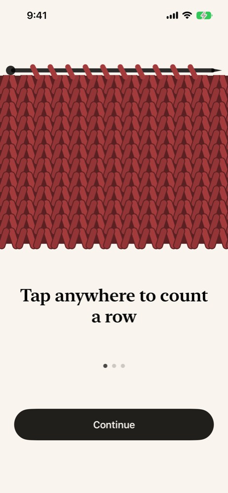
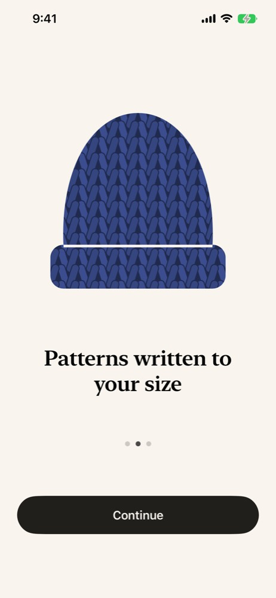
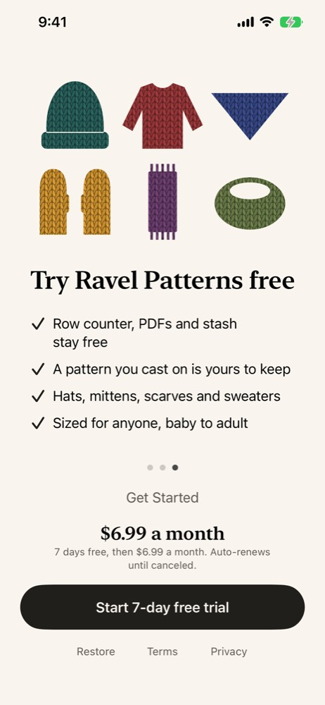
- Page 1 lets me tap and the fabric grows, which is the best moment in onboarding. It shows no number. A row counter that does not show the count leaves the point half made. Show the count ticking up.
- Page 2 says "Patterns written to your size" over a hat that fills with color. It does not show what the sentence means. One size chip changing and a stitch count changing with it ("Baby 64 stitches" to "Adult 88 stitches") would make the claim concrete without a word of copy.
- Page 3 follows the fleet trial layout and I would not change its structure. The price is the largest price text, the terms are readable, and "Get Started" leaves quietly.
- Everyone lands on Patterns afterwards. That was a deliberate choice. Its cost falls on the person who searched "row counter": their first screen is a paid library, and the counter is one tab away with no hint. Watch how many first sessions ever open Projects.
Motion problems on these pages are under Motion.
First updateThe Patterns tab
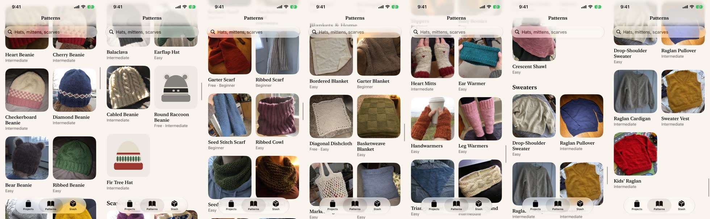
- The Round Raccoon Beanie is first in Trending and first in Free, stacked directly above itself on the first screen. It looks like a short catalogue. Drop it from one shelf when it leads the other.
- Drawings and photos are mixed in the same row, which makes the drawings look like missing images.
- Nothing says other people knit these. No project counts, no ratings, no "knitted by". Fine for day one; it is where real test knits would show.
First updateSearch misses the words gift knitters type
| Typed | Result | Should |
|---|---|---|
| christmas, gift | Nothing | The Holiday shelf, quick gifts. The "Holiday" tag is not searched. |
| toque, jumper | Nothing | Hats, sweaters. Canadian and British words; "beanie" already maps to hat. |
| cardigan for baby | Baby hats first, the cardigan below | The garment word should outrank the size word. |
| dog sweater, crochet blanket | Human sweaters, knitted blankets, no note | Say "No dog patterns yet" and then show sweaters, or show nothing. |
| 3 year old | Adult sweaters | Child sizes. |
| top down | Socks | The top-down raglans. |
Working well: socks, free, easy, gloves, raccoon, shawl, xl, "husband sweater", "ribbed beanie".
First updateThe design page
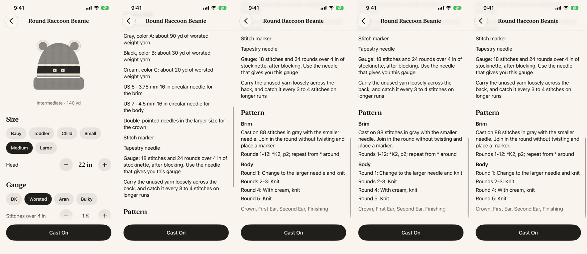
- This is the strongest screen in the app. Size, yardage, needles and the opening rows at my size, all before paying. No competitor shows this much.
- The "Gauge" heading sits over yarn weight chips (DK, Worsted, Aran, Bulky). A beginner does not know that picking a weight sets a gauge. Call the chips "Yarn" and keep "Gauge" for the stitches row.
- No help measuring. "Head 22 in": measured where? One line ("around the widest part, above the ears") and, for hats, a note that the hat is knitted smaller than the head so it stays on. The materials line already says "19.5 in around, to fit a 22 in head", which a new knitter will read as a mistake unless it is explained.
- The last grey line ("Crown, First Ear, Second Ear, Finishing") reads as stray text. Label it: "Then: Crown, First Ear..." or make it the entry to the whole pattern.
The free tracker
The tracker is the part that earns ratings, because it is what most people will use and it is free. It is also thinner than the free tiers of the apps knitters already use.
First updatePDF reader
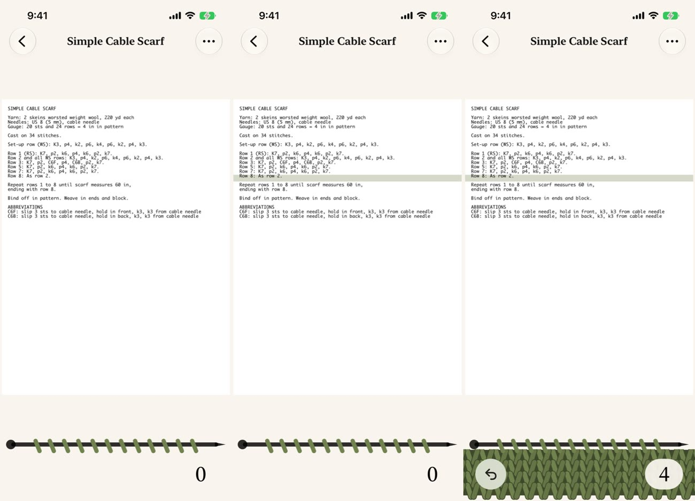
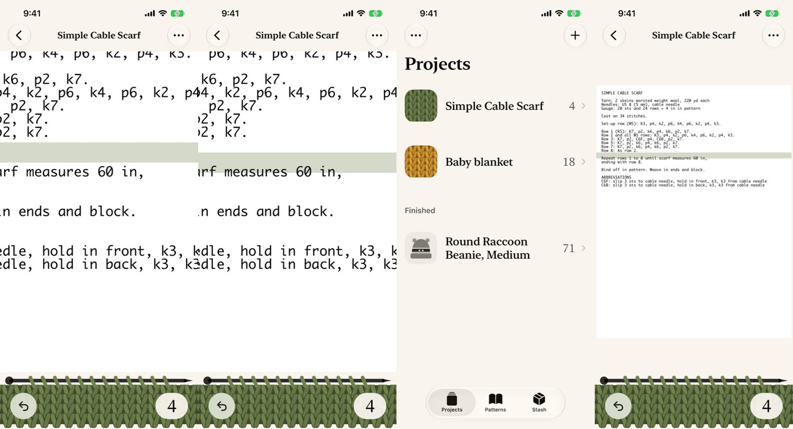
- Zoom is forgotten every time the project opens. A full page at phone width is too small to knit from, so the first act of every session is pinch and scroll. The page and the band are saved; the zoom and position are not.
- The band does not move when I count. My Row Counter's most praised feature is a highlighter tied to the counter. Here I tap to count and then tap again to move the band.
- One band, no notes, no column marker for charts, no highlighter. PDF markup comes up in 66 competitor reviews, charts in 41.
- The page stays white in dark mode, bright next to the dark fabric at night.
- A PDF cannot be sent to Ravel. The app declares no document types, so a pattern downloaded in Safari or Mail has no "Open in Ravel". The only way in is the app's own file picker.
First updateNo backup, no sync, no export
Everything lives in one local store. A lost, broken or replaced phone without an iCloud device backup loses every count, PDF and stash entry. Lost data is the most common complaint across the category (74 reviews in 10 of 11 apps) and the loudest 1-star reason after money. Free iCloud sync is already standard in StitchTally, CozyKnit, KnitHub and YarnBuddy.
The project rule says a row count must never be lost, and sync is where apps lose counts, so the caution is right. An export file ("Save a backup to Files", and "Restore") keeps the rule and closes the hole. Check too that the store is included in device backups.
LaterCounters
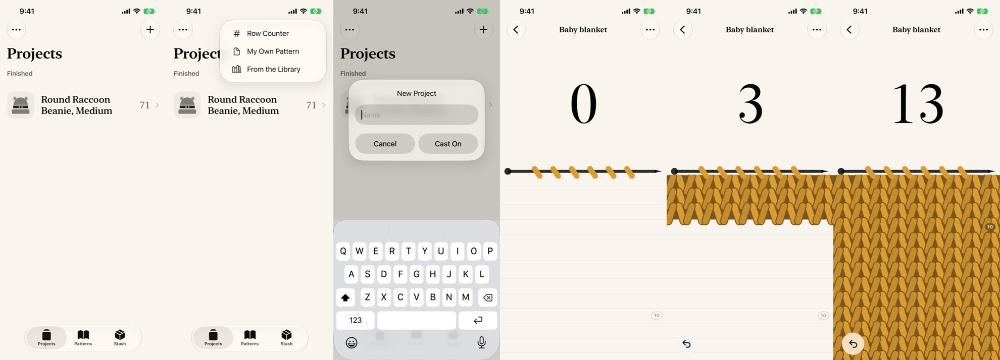
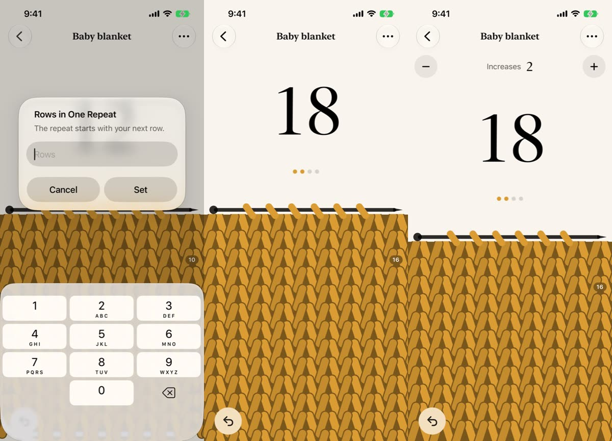
- The repeat shows position only. "Work the 8-row repeat 12 times" needs "repeat 5 of 12". The dots tell me I am on row 3 of 8.
- One extra counter. Sock and sleeve knitters run three or more (rows, decreases, pattern repeat).
- No reminder at a row ("buttonhole on row 24", "decrease every 6th row"), which is the thing knitCompanion sells.
- No counting without opening the app. Lock Screen, Live Activity, widget and Watch are in every serious 2025 and 2026 entrant, and "count rows without unlocking" is asked for even in 5-star reviews. A Live Activity is the cheapest of these and covers the knitter whose phone locked mid-row. Inside a project Ravel keeps the screen awake, which already helps.
Before releaseStash
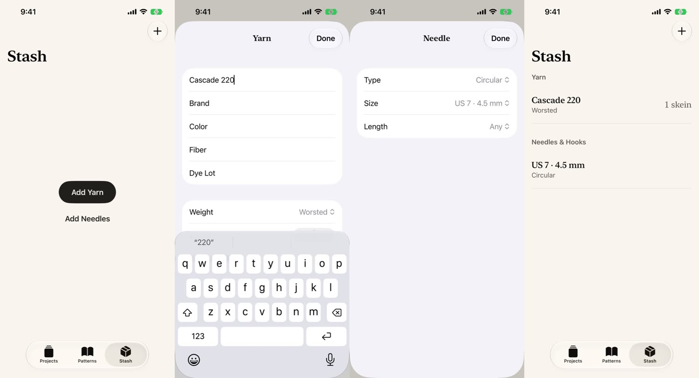
- Swipe to delete removes a yarn or needle at once, with no question and no undo. A yarn can hold brand, color, dye lot and yardage typed by hand. Ask first, as deleting a project does.
- A yarn saved without a name is thrown away. Enter fiber, dye lot and skeins, leave Name empty, tap Done: the yarn is gone (
dropUnnameddeletes on an empty name, whatever else was typed). Found by the other audit; I had missed it. Keep any yarn with a field filled in and name it from its fiber or weight. - Adding a needle saves it the moment the editor opens. Swipe the sheet away and a default "US 7 circular" stays in the stash.
- First update: skeins are whole numbers only (no half skein); the editors and the Materials and Details sheets are cool system grey against the warm paper everywhere else; the stash is not used by the library ("you have enough Cascade 220 for this hat" is the obvious payoff for keeping one).
First updateProject list, units, relaunch
- Each project row shows a bare number ("18"). Say "row 18", and for a library project show progress ("round 34 of 71").
- The list is sorted by when a project was created, not when it was last worked, so the scarf I knit every night sinks under the project I added yesterday.
- Finished projects show no date.
- Units follow the phone's region with no switch. Many Canadian knitters, and anyone following a US pattern abroad, work in inches. One setting.
- Reopening the app shows the project list, not the project I was in. The count is safe; it is one extra tap every time I pick up the needles.
Motion, frame by frame
| Moment | What the frames show | Verdict |
|---|---|---|
| Cold launch | White system screen, then a hard cut to the cream app | FixLaunch background color (above) |
| Onboarding, each Continue | The page slides and fades in 0.35 s. During it the black button fades almost to the paper color and back, about 0.3 s, so the one control on screen blinks on every page | FixKeep the button outside the animated view |
| Onboarding, arriving at the trial page | For about 2 frames the new price line and "Start 7-day free trial" are drawn over the old dots and the old "Continue". The dots then sit about 27 points higher than on page 2 | FixSame cause; hold the bar's height steady across pages |
| Leaving onboarding | The cover drops and the Patterns tab is already in place | Clean |
| Design to project (Cast On) | Standard push; the cast-on screen is laid out before it arrives | Clean |
| Each tap in a guided pattern | The old and new instruction are drawn on top of each other for about 0.2 s. With two lines of text it is an unreadable smear. The picture and section label shift vertically when the text length changes | FixFade the old text out before the new one in, or cut; pin the header |
| Each tap on the counter | A new row of stitches grows on the needle; the number changes at once | CleanThe best motion in the app |
| Ten taps in 1.2 seconds | All ten counted, fabric caught up without stutter | Clean |
| Undo | The row unravels, count steps back | Clean |
| Paywall open, plan change, close | Sheet rises with prices in place; selection moves without a jump; closes with no flash | Clean |
| Menu, Materials, Go to Section | System menus and sheets, no layout shift | CleanSheets are grey, not paper |
| Force quit and relaunch mid-project | Count intact, fabric redrawn at the same row | Clean |
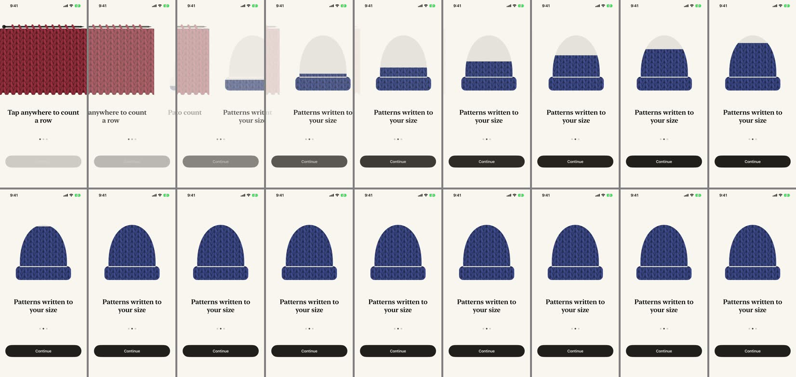
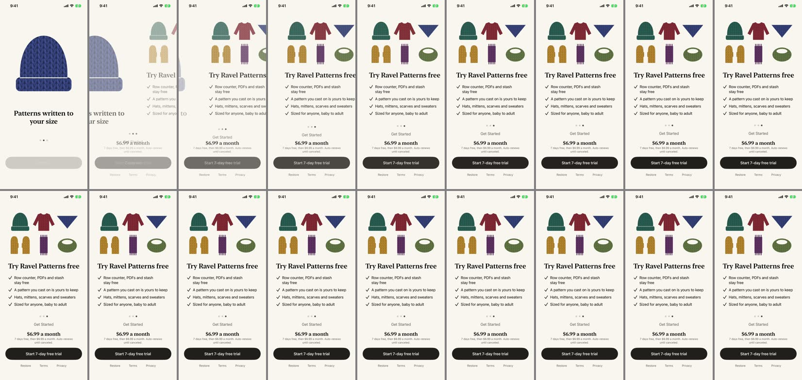
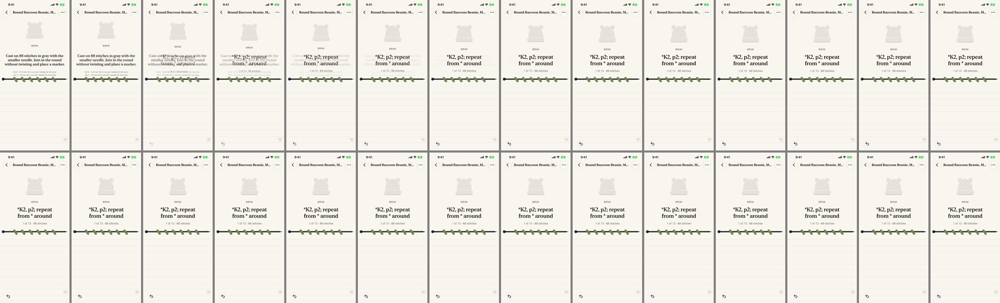
Dark mode was checked on the project list, counter, PDF and library: colors and contrast are right throughout, except the white PDF page.
The two journeys, and where each one has a hole
The gift knitter who saw the raccoon hat
- Store page, install, open. Hole: white flash.
- Three onboarding pages, "Get Started". Smooth, under 20 seconds. Hole: page 2 does not show what "your size" does.
- Patterns tab, raccoon hat first. Good: exactly what they came for, and it is free.
- Design page. Good: size, yarn, needles and the first rows before any commitment. Hole: cannot read the whole pattern before buying yarn; no word on techniques; "19.5 in to fit a 22 in head" unexplained.
- Cast On, knit. Good: one calm instruction, big text, fabric growing. Holes: green loops versus "gray"; no round numbers; no look-ahead; stranded eyes; ear placement.
- Finished. Hole: nothing to do next, at the exact moment they would pay to knit mittens to match.
- They tap a locked design: "Try Free for 7 Days", a clear paywall, price first. Good.
The knitter with a PDF who searched "row counter"
- Onboarding, then the Patterns tab. Hole: they came for a counter and are looking at a paid library.
- Projects tab, add a project, tap to count. Good: instant, no account, nothing to set up.
- Add their PDF. Hole: only from inside the app; no "Open in Ravel" from Safari or Mail.
- Knit from the PDF. Holes: zoom resets each visit; the band does not follow the count; no notes on the page.
- Week two: a second project with sleeve decreases. Holes: one extra counter, no reminder at a row, no count of repeats done.
- New phone. Hole: no backup inside the app.
Market: what Ravel has, and what knitters will miss
What nobody else has
- Patterns computed from the knitter's own measurements and gauge, across 45 designs. The only live comparables are KnitsThatFit (sweaters only, 127 ratings, no update since March 2025) and Knitting Genius (52 ratings). Bellish, the venture-backed version of this idea, is gone. Loopsy, LooseLoop, Ribblr, Knitrino and Tin Can Knits only hide the other sizes of a fixed pattern.
- Arithmetic, not a language model. The fastest-growing rivals run AI parsers, and their 1-star reviews are AI errors ("Got my charts completely wrong", LooseLoop, after five hours of socks).
- A cast-on pattern is frozen and stays yours. This answers the most damaging review pattern of 2026: Loopsy removed a paid feature mid-project, knitCompanion moved lifetime buyers to a subscription, Tin Can Knits wiped progress.
- A wrong pattern can be reported and the fix is offered at the row you are on.
- The whole tracker is free with no account, no ads, no project cap. No app that also sells patterns does this.
What knitters ask competitors for, and Ravel lacks
Reviews mentioning each feature, across 2,108 US App Store reviews of 11 knitting apps dated 2024 or later. Counts are keyword matches: read them as relative size, not statistics.
The two that move ratings most are data safety and counting without opening the app: they are what the happiest reviewers of other apps say they pay for and what the angriest say they lost. A store name one syllable from "Ravelry" will also draw the question "does it connect to Ravelry?"
Who pays for sized patterns, and what sank the earlier attempts
- The buyers are garment knitters whose bodies sit outside standard sizes, and gift knitters buying children's sizes in November and December. Scarves, cowls and dishcloths are free everywhere and do not sell a subscription.
- The market for custom fit is real and small. CustomFit, the best-known tool, had 3,854 Ravelry projects in a decade and closed in June 2024. One ordinary sweater pattern (Flax) has 33,772.
- One visible wrong number defines a sizing app. KnitsThatFit's reviews: "401 yards of yarn for a men's sweater", "would fit Barbie". The checks in
PatternTestsare the right defense; a real test knit per garment is the other half. - Knitters accept calculators. A free custom raglan worksheet has 2,423 Ravelry projects and no AI complaints. Name the method ("the same arithmetic as a percentage-system sweater, worked out from your gauge") and show who made the app. Avoid "generate", "smart", "instantly".
- Crochet is not a launch need. 58 percent of yarn crafters do both, but only 7 of 2,629 reviews of knit-first apps complain about missing crochet. Being misled is what gets punished, and Ravel says plainly that the library is knitting.
- What gets apps deleted in the first five minutes (forced sign-up, a trial pushed before any free use, ads, lost work) Ravel already avoids by design.
Reaching the first thousand
- Test knitters first. They produce Ravelry project pages and real photos, which is the proof the library lacks and Ravelry is where 70 percent of surveyed knitters say they get their ideas.
- A late November launch catches only quick gifts: hats, mittens, baby things. Lead with those, in children's sizes.
- TikTok and Instagram reward real hands and real yarn.
- r/craftsnark is where a misstep gets taken apart, not where to launch. Reddit could not be read for this audit, so this point rests on press coverage.
Pricing
| Group | Monthly | Yearly | Lifetime | What it buys |
|---|---|---|---|---|
| Ravel | $6.99 | $39.99 | $79.99 | 45 sized designs; the tracker is free |
| YarnPal, Loopsy, Woolsy, LoopCraft | up to $8.99 | $39.99 | Loopsy $99.99 | Hundreds of patterns, video, sync, stash |
| Knit&Note | about $9.99 | $107.99 | none | 1,200 patterns, tracker (3.9 stars) |
| Trackers: My Row Counter, YarnBuddy, StitchTally, CozyKnit | $1.99 to $4.99 | $9.99 to $24.99 | $24.99 to $79.99 | Sync, Watch, PDF markup |
| Per pattern: Tin Can Knits, Knitting Genius, KnitsThatFit | $2.99 to $14.99 each | One pattern or one generator |
- $39.99 a year is the top of the category, and everyone else charging it bundles a far larger library. Knitters compare on catalogue size first. Ravel's answer has to be "45 designs times every size and every yarn", said in numbers on the paywall and the store page.
- $6.99 a month is high for the category but equals one indie pattern, which is the fair comparison and worth saying.
- $79.99 lifetime is mid-pack and lifetime buyers are the most vocal fans. Never take it back from anyone.
- Recommendation: do not change prices before launch. There is no baseline yet, and real finished knits will move conversion more than ten dollars will. Revisit yearly after the first month of data.
What works and should not change
- No account, no ads, no network needed, and the tracker is really free. This is the category's top complaint, avoided.
- The price is on screen before the trial, the paywall closes cleanly, and a pattern you cast on is yours.
- The counter: whole screen as the button, fabric that grows, instant undo, 10 fast taps all counted, count intact after a force quit, screen stays awake.
- The design page shows size, yardage, needles and opening rows before paying.
- Stitch counts after every shaping row; needles named at cast on; abbreviations defined in plain language.
- The Raglan Pullover's numbers are consistent from cast on to bind off.
- Dark mode is right nearly everywhere. The type and the paper color give the app a look of its own.
Not covered
- iPad, German, reduce motion: a separate audit ran those today (audit 1120).
- VoiceOver and large text.
- A real purchase, restore, or a lapsed trial. Only the mock paywall was exercised.
- A physical phone. Launch time and frame timing should be checked on one.
- The other 43 designs were not knitted through. Only the Raccoon Beanie and Raglan Pullover were followed to the end.
- Reddit and Ravelry forums could not be read by the research agents. Points that rest on them are marked in the raw notes as unverified.
Sources and evidence
- Competitor research with the full 30-app table, feature matrix, review quotes and links: raw/2026-11-20-fable/research-competitors.md
- Knitter research (who buys, how patterns are trusted, AI, precedents, launch channels) with links: raw/2026-11-20-fable/research-knitters.md
- Screens and frame sheets used above:
raw/2026-11-20-fable/. More in the same folder: paywall, materials, glossary and section menu, dark mode, project list, search, cast-on transition frames. - Etsy's rule: valueaddedresource.net/etsy-bans-ai-patterns. Ribblr: ribblr.com/contentpolicy. TKGA: tkga.org/recognizing-ai-in-knitting.
- Yarn consumer survey, 2024: Craft Industry Alliance. CustomFit on Ravelry: ravelry.com/patterns/library/customfit. Flax: ravelry.com/patterns/library/flax.
- App facts and reviews: US App Store pages and the iTunes review feed, read 2026-11-20. Review counts are keyword matches.